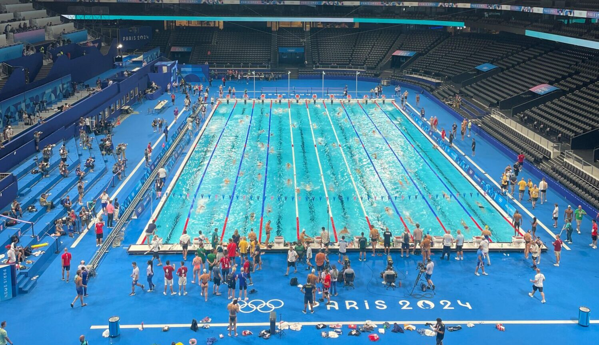

Markov drugi izbor
Plivanje

O sportu
Plivanje je pojedinačni i ekipni vodeni sport koji uključuje kretanje kroz vodu korištenjem različitih plivačkih tehnika. Osnovni stilovi plivanja uključuju slobodni stil, prsno, leđno i leptir.
Natjecateljski plivač u utrci [JPG]
Svaki stil ima vlastita pravila i tehnike. Najpopularniji stil među početnicima i rekreativcima je prsno plivanje jer omogućuje dobar pregled situacije i nije prezahtjevan.
Plivačka natjecanja održavaju se u bazenima od 25m i 50m. Plivanje je olimpijski sport, a Hrvatska ima uspješne plivače koji su ostvarili odlične rezultate na svjetskoj sceni.

Olimpijske igre [JPG]
Pravila sporta
- Utrke se održavaju u bazenima od 25m ili 50m
- Discipline uključuju različite stilove i udaljenosti
- Svaki stil ima stroga pravila izvedbe
- Plivači startaju s blokova, a vrijeme mjeri elektronski sustav
Svjetsko prvenstvo u veslanju [MP4]